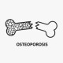

Osteoporosis
بیمارامون دو دسته هستند دستهی اول مبتلا شدند و نیاز به درمان دارند. یعنی
Zscore<-2 Tscore<-2.5
که به این صورت تجویز میکنیم
Rx:
1. Tab Ca-D 500 N=100 daily
2. Pearl Vit D 50.000 N=50 هفتگی
3. Tab Osteofos 70mg N=15 هفتگی
Alendronate (Fosamax or Osteomax or Osimax)
بجای قلم سومی میتونین:
Tab Risedronate 35mg N=15 هفتگی
Or Tab Risedronate 150mg N=15 ماهانه
دستهی دوم بیمارانی که در حال مصرف کورتون هستند و بصورت پروفیلاکسی نصف دوز درمانی بهشون میدیم:
Tab Osteofos 35mg N=15 هفتگی
Or Tab Risedronate 35mg N=15 هفتگی
1️⃣ مالتیپل میلوما
2️⃣ استئومالاسی
3️⃣ استئودیستروفی کلیوی
4️⃣ هایپرپاراتیروئیدیسم اولیه
Homocystinuria/Homocysteinemia 5️⃣
6️⃣ متاستاز استخوانی
7️⃣ بدخیمی ها : لوکمی ، لنفوم
8️⃣ بیماری پاژه
9️⃣ بیماری Scurvy
🔟 بیماری سیکل سل